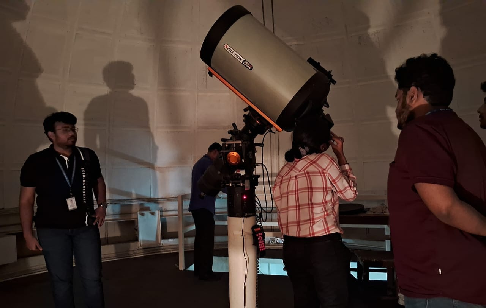

The Xaverian Astronomical Society, in association with the Postgraduate and Research Department of Physics, organised the National Science Day celebration on 28th February 2024 in Room 41 of St. Xavier’s College (Autonomous), Park Street, Kolkata.
The programme began with the Inaugural Address delivered by Rev. Dr. Dominic Savio SJ, Principal of St. Xavier’s College (Autonomous), Kolkata. This was followed by a short video prepared by the working committee, introducing the history and significance of National Science Day and the legacy of the Father Eugene Lafont Observatory.

Event Legacy
The celebration serves as a tribute to the spirit of scientific inquiry and the historic contributions of the college toward academic development in physics and astronomy. By integrating the history of the Father Eugene Lafont Observatory, the event highlighted the continuous pursuit of celestial knowledge that defines the Xaverian Astronomical Society.